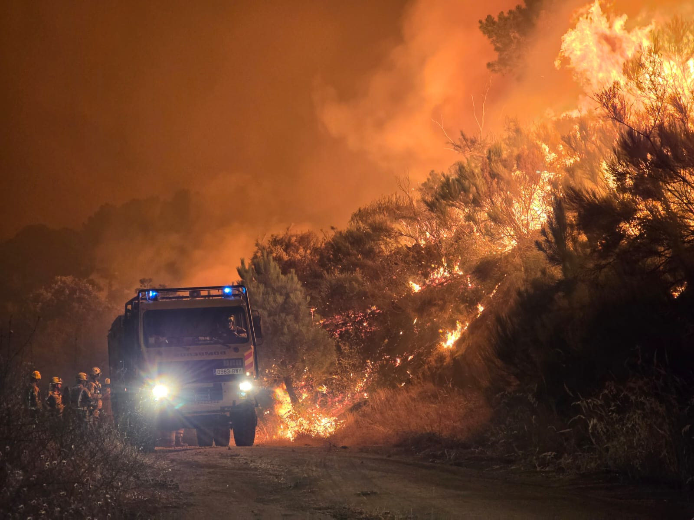
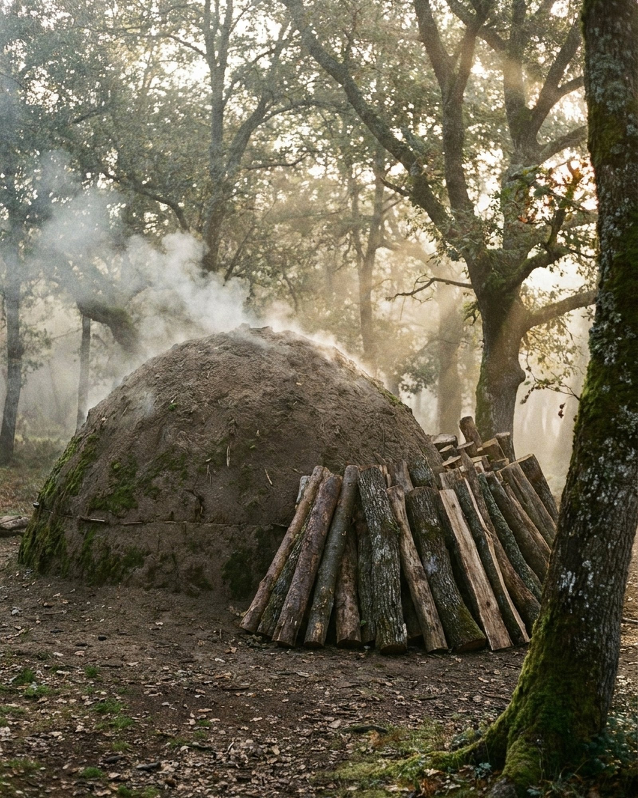
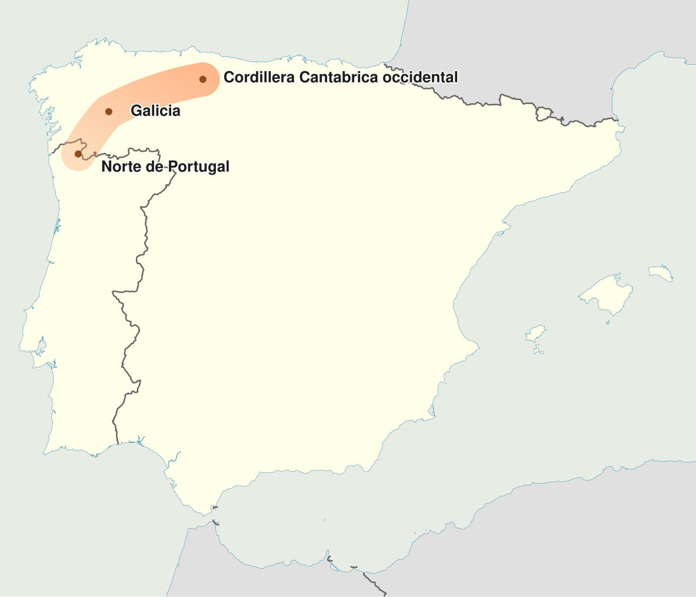
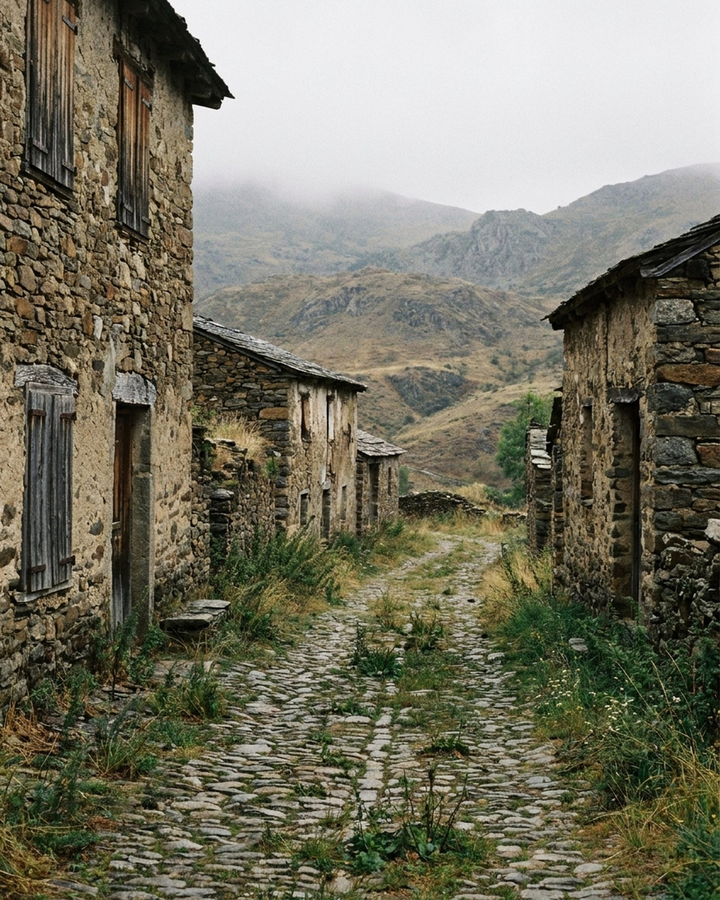
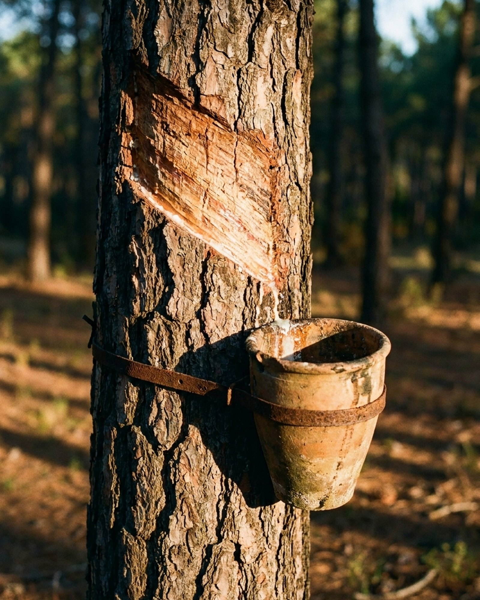
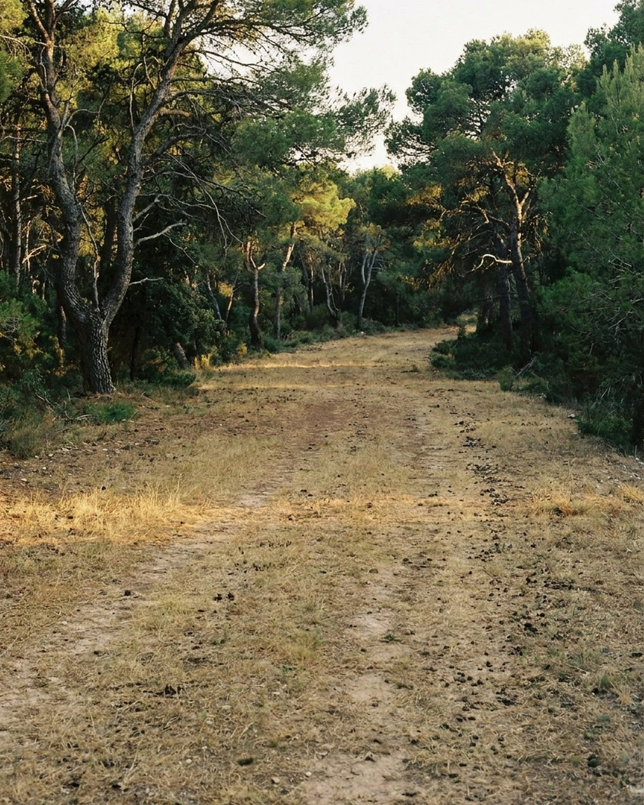

Mientras escribimos esto hay gente durmiendo fuera de su casa. Pueblos desalojados, ganaderos que han perdido el pasto del año, bomberos forestales encadenando turnos. Nada de lo que viene a continuación pretende relativizar eso.
Pero cuando pase el humo volverá la misma conversación de todos los veranos, y merece la pena tener los datos a mano antes de que llegue.
Empecemos por uno incómodo: en 2025 hubo menos incendios que la media de la década. Y ardió un 236% más de superficie.
No es una errata. Sesenta y tres grandes incendios —el 0,77% de los siniestros del año— se llevaron el 87,42% de todo lo quemado. El resto, más de ocho mil fuegos, apenas dejó rastro en las estadísticas.
Ese dato desmonta la discusión habitual. Si el problema fueran las chispas, menos chispas significaría menos desastre. Y no funciona así. El problema no es cuántas chispas hay: es lo que se encuentran cuando llegan.
Este artículo va de qué se encuentran exactamente, por qué está ahí, y qué se está haciendo ya —con nombres y cifras— para que deje de estarlo. Si tu marca o tu taller trabaja con materia prima que sale del monte, la última parte va directamente contigo.

Bomberos frente al fuego en el monte. En 2025, 63 grandes incendios concentraron el 87% de toda la superficie quemada del año.
Acto ILo que arde no es lo que crees
Cuando pensamos en un incendio forestal, pensamos en árboles. Los datos dicen otra cosa.
De las 61.163 hectáreas quemadas en España entre el 1 de enero y el 12 de julio de 2026, según el avance del Ministerio para la Transición Ecológica:
Casi el 80% de lo que ardió no era bosque. Era matorral, monte abierto, pastos y dehesas. Es decir: exactamente el territorio que dejó de pastarse, segarse y aprovecharse.
Eso cambia la pregunta. No es por qué arde el bosque. Es por qué hay tanta superficie que ya no es ninguna otra cosa.
La tijera
Si dibujas dos líneas desde 1968, cuando empieza la estadística oficial, ves el movimiento entero de un vistazo.
Una baja y otra sube. Hay menos fuegos y cada fuego se lleva más.
Conviene decirlo claro, porque el relato fácil también es falso: no es verdad que antes no hubiera incendios. En 1985 ardieron más de 480.000 hectáreas, el peor año de toda la serie histórica. En 1989 hubo 15.922 siniestros, casi el doble que los 8.199 de 2025. Quien diga que esto es nuevo no ha mirado los números.
Lo que ha cambiado no es cuánto arde. Es cómo. El paisaje pasó de mosaico a continuo: donde antes había parcelas, linderos, pastos cortos y caminos abiertos que frenaban el fuego, hoy hay una masa sin interrupción. Y un solo fuego se lleva lo que antes se repartían cien.
Acto IILo que se fue

La carbonera: uno de los oficios que durante siglos retiró leña y matorral del monte sin proponérselo.
España empeora mientras Portugal mejora
Antes de mirar atrás, un dato que casi nadie ha contado y que nos parece el más serio de todos.
El estudio Análisis de la relación entre despoblamiento rural y cambio en los regímenes de incendios del Suroeste Europeo, dirigido por el ingeniero forestal Juan Picos (Universidad de Vigo) para el Eixo Atlántico con financiación del programa europeo Sudoe, ha analizado 4.412 unidades administrativas locales de España, Portugal y Francia entre 2016 y 2026.
| País | 2016-2020 | 2021-2026 | Tendencia |
|---|---|---|---|
| Portugal | 23,09% | 18,94% | Mejora |
| España | 4,62% | 7,50% | Empeora |
Portugal, que partía de una situación mucho peor, ha reducido su proporción. España la ha subido más de un 60%. Lo que llevamos de 2026 no apunta a que se corrija.
El estudio identifica además lo que llama el gran corredor europeo del fuego: una franja de alta densidad de incendios que arranca en el norte de Portugal, atraviesa Galicia y continúa hacia el sector occidental de la cordillera Cantábrica.

«El fuego no es solo un problema forestal, sino también demográfico, territorial y social.»
— Juan Picos, Universidad de VigoEsa frase es la bisagra del artículo. Y explica por qué una consultoría de economía circular aplicada a oficios tiene algo que decir sobre incendios.
El monte tuvo nómina
Durante siglos, ese territorio que hoy arde tuvo quien lo trabajara. Y no eran figurantes de postal: eran oficios con mercado, con precio y con cuadrilla.
Carboneros
Convertían en carbón la leña y el matorral que hoy se queda donde cae. Bajaban la carga de combustible sin proponérselo: era el subproducto de su jornal.
Pastores
El diente del ganado mantenía el pasto corto y el monte abierto. Un rebaño es un desbrozador que en vez de costar dinero, lo produce.
Resineros
Nueve meses al año dentro del pinar, de marzo a noviembre. Es decir: alguien presente en el monte exactamente durante los meses de mayor riesgo.
Corcheros
Cada nueve años la cuadrilla entra al alcornocal a sacar el corcho. Ese ciclo obliga a mantener accesos, cortafuegos y vigilancia.
Cesteros y esparteros
Mimbre, castaño y esparto cortados a mano. Cortar la vara es podar; dejar de cortarla es acumular.
Ninguno mantenía el monte abierto por conciencia ambiental. Lo hacía porque el monte era su nómina. El paisaje gestionado no era el objetivo: era el subproducto de un oficio que daba de comer.
Los números del abandono
Cuando el oficio deja de dar de comer, el monte deja de gestionarse. Y eso está medido:
- 2,3 millones de hectáreas agrarias abandonadas en España
- Ovino y caprino: entre un 30% y un 40% menos en treinta años
- Población rural: −4,4% entre 2014 y 2023. Los jóvenes, −11,7%
- El 77% de los montes españoles no tiene ningún plan de gestión

Cuando el oficio deja de dar de comer, el pueblo se cierra y el monte deja de gestionarse.
Y conviene entender la escala de lo que se ha desconectado. El sector forestal español factura alrededor de 20.000 millones de euros anuales y sostiene 130.000 empleos directos en transformación más otros 80.000 en trabajos de monte. Mientras tanto, de los 45 millones de metros cúbicos de madera que crecen cada año, solo se aprovechan 15.
No es un sector marginal al que rescatar por pena: es un sector grande que ha dejado de llegar a su propia materia prima.
Cinco frases que vas a oír este verano (y qué responder)
«No dejan limpiar el monte.»
Las restricciones son temporales y específicas de épocas de alto riesgo. El problema documentado no es la prohibición: es que el 77% del monte no tiene plan de gestión y que no hay quien haga el trabajo, porque no lo paga nadie.
«Son los pirómanos.»
Los informes de la Fiscalía entre 2006 y 2017 concluyen que no existen evidencias de tramas criminales organizadas. Hay intencionalidad y hay negligencia. Pero el pirómano solitario cumple una función cómoda: convierte un problema de gestión del territorio en un problema de orden público.
«La culpa es del eucalipto.»
Ourense encabeza las estadísticas de incendios con poca superficie de eucalipto, según el análisis de WWF. La inflamabilidad depende de la cantidad de biomasa y de cómo se organiza, no solo de la especie.
«Antes esto no pasaba.»
En 1989 hubo casi el doble de incendios que el año pasado, y 1985 sigue siendo el peor año de la serie. Lo que ha cambiado es el tipo de incendio, no su existencia.
«Es el cambio climático.»
También, y mucho. Las condiciones de fuego extremo son hoy unas 40 veces más frecuentes que en el clima preindustrial. Pero la Oficina de Ciencia y Tecnología del Congreso ordena los factores: el abandono rural y la acumulación de combustible como factor principal, el cambio climático como segundo. Y no compiten: se retroalimentan.
Acto IIILo que ya funciona: cinco palancas
La parte esperanzadora es que no hay que inventar nada. Lo que funciona ya está funcionando, en sitios concretos, con nombre y con cifras. Solo que casi nadie lo cuenta.
Palanca 1 · Que el producto tenga mercado

Pino resinado con su pote de miera: cuando la resina volvió a ser negocio, volvió alguien al pinar.
España producía 1.700 toneladas de miera en 2006. En 2018 superaba las 12.000. Hoy hay en torno a 1.600 resineros censados.
¿Qué pasó? Que el precio internacional se movió y la resina volvió a ser negocio. No hubo una campaña de concienciación: hubo un mercado. Y con el mercado volvió el oficio, y con el oficio volvió alguien al pinar durante los meses de mayor riesgo.
Una finca de 180 hectáreas con 20.000 pinos puede dar de comer a cuatro o cinco familias solo con la resina. Eso es densidad de población en sitios donde el censo se cae.
La lección: ningún oficio del monte se sostiene por su valor ambiental. Se sostiene cuando su producto tiene comprador.
Palanca 2 · Que se pague por lo que se evita, no solo por lo que se produce
Un rebaño que pasta un cortafuegos presta un servicio público: reduce la carga de combustible en un punto estratégico. Pero cobra únicamente por la carne o la leche que vende.
Hay dinero público que empieza a corregirlo. Los ecoesquemas de la PAC pagan por pastoreo extensivo (importes definitivos de la campaña 2025):
| Ecorrégimen | Hasta el primer tramo | A partir del segundo |
|---|---|---|
| Pastos húmedos | 54,54 €/ha (≤65 ha) | 43,64 €/ha |
| Pastos mediterráneos peninsulares | 35,93 €/ha (≤95 ha) | 27,27 €/ha |
| Pastos mediterráneos insulares | 57,93 €/ha (≤95 ha) | 49,27 €/ha |
Con un complemento de +25 €/ha si se mantiene la práctica la campaña siguiente.
Es un principio correcto con una escala pequeña. Compáralo con esto: el 78% del presupuesto contra incendios va a apagar y el 12% a evitar, y el Colegio Oficial de Ingenieros Técnicos Forestales calcula que cada euro invertido en prevención ahorra hasta cien en extinción.
En Andalucía, la Red de Áreas Pasto-Cortafuegos (RAPCA) lleva desde 2005 pagando a ganaderos por pastorear franjas estratégicas: 5.700 hectáreas gestionadas así.
Palanca 3 · Que la prevención tenga marca

Franja de pasto abierta dentro de un pinar: la prevención que se puede ver, contar y cobrar. Imagen ilustrativa.
Ramats de Foc, en Girona, funciona desde 2017 con una idea simple. Los bomberos del GRAF definen qué zonas conviene pastorear. Los ganaderos las pastorean. Y su carne se vende con un sello propio que le cuenta al comprador exactamente eso. Han pasado de 3 a 20 ganaderías y de 5 a 35 puntos de venta.
El Centre de Ciència i Tecnologia Forestal de Catalunya ha llevado la idea más lejos con las marcas de garantía europeas Fire Product Resilient Landscape y su versión para vino, que certifican productos procedentes de fincas cuyo manejo previene incendios.
Fíjate en lo que ha ocurrido ahí: la prevención ha dejado de ser un coste y se ha convertido en un atributo de producto. Alguien paga un poco más por un chuletón porque ese chuletón mantuvo un cortafuegos. Eso no es marketing verde: es trazabilidad con consecuencia física.
Palanca 4 · Que vuelva el mosaico
Si el problema es que el paisaje pasó de mosaico a continuo, la solución es devolver el mosaico. Y hay un proyecto español que lo ha hecho con método.
El Proyecto Mosaico, en Sierra de Gata y Las Hurdes, impulsado por la Universidad de Extremadura y la Junta, ha implantado 1.200 hectáreas de cortafuegos productivos — franjas que frenan el fuego porque alguien las trabaja y saca algo de ellas. En su primer año registró 160 iniciativas público-privadas. Hoy continúa a través de la Asociación Mosaico.
Está incluido en el catálogo europeo SIMRA de innovación social en zonas rurales marginadas, sus resultados se presentaron en el Congreso de los Diputados en septiembre de 2025, y hay universidades de Chile, Portugal y California mirándolo para replicarlo.
La diferencia entre un cortafuegos y un cortafuegos productivo es quién paga su mantenimiento. En el primero, la administración, todos los años, para siempre. En el segundo, el mercado.
Palanca 5 · Que el comprador entienda qué está comprando
Las cuatro palancas anteriores comparten un punto ciego: funcionan solo si alguien, al final de la cadena, sabe qué está pagando.
El sello de Ramats de Foc no sirve de nada si en el punto de venta nadie puede explicarlo. La resina no vuelve al pinar si el cliente industrial no distingue una miera de otra. El queso de un rebaño que pasta un cortafuegos compite en el lineal con otro dos euros más barato que cuenta la misma historia bonita sin haber hecho nada.
Y ahí es donde se cae la mayoría de los proyectos. No por falta de impacto: por falta de un relato que aguante una pregunta.
Contar esto bien tiene tres requisitos, y ninguno es creativo:
- Que sea verificable. Si dices que tu materia prima mantiene un paisaje, tienes que poder enseñar de qué finca sale y qué manejo tiene.
- Que sea específico. "Sostenible" no significa nada. "Nuestra lana viene de rebaños que pastorean áreas cortafuegos en la sierra de X" sí.
- Que admita el matiz. El relato que no reconoce sus límites se desmonta con una sola pregunta incómoda. El que los reconoce, no.
Si tu marca compra materia prima del monte
Esto va para talleres, marcas artesanas y proyectos con propósito cuya materia prima sale de un monte: lana, corcho, madera, mimbre, esparto, castaño, resinas, tintes.
¿De qué monte sale exactamente tu materia prima?
Deberías poder nombrar la finca, la comarca o la cooperativa. Si tu respuesta es "de un proveedor nacional", no tienes trazabilidad: tienes un proveedor.
¿Qué manejo tiene ese monte?
¿Se pastorea? ¿Se resina? ¿Se desbroza? ¿Tiene plan de gestión? Ese dato es el que convierte tu compra en prevención, o en nada.
¿Puedes demostrarlo?
Una foto, una factura, un nombre, una visita. Si no puedes enseñarlo, no lo cuentes: ahí empieza exactamente el greenwashing.
¿Tu cliente lo entiende en menos de diez segundos?
Si necesitas un párrafo para explicar por qué tu pieza vale más, el mensaje todavía no está terminado.
Si has fallado en dos o más, no tienes un problema de producto. Tienes un problema de diagnóstico y de relato — y esos sí se arreglan.
Preguntas frecuentes
¿Es verdad que antes no había incendios?
¿La despoblación causa los incendios?
¿Existen ayudas para pastorear zonas de prevención?
¿Qué puede hacer una marca pequeña que compra materia prima del monte?
¿Cómo se cuenta esto sin caer en greenwashing?
El monte no necesita más aviones
Necesita más oficios rentables.
Los medios de extinción son imprescindibles y hay que pagarlos bien. Pero un país que dedica el 78% de su presupuesto a apagar y el 12% a evitar está eligiendo, todos los años, llegar tarde.
Lo que sí funciona —la resina, Ramats de Foc, la RAPCA, el Proyecto Mosaico— tiene una cosa en común: alguien encontró la manera de que estar en el monte compensara. Y en todos los casos hizo falta lo mismo: un producto que se venda, un modelo de negocio que aguante y un relato que se entienda.